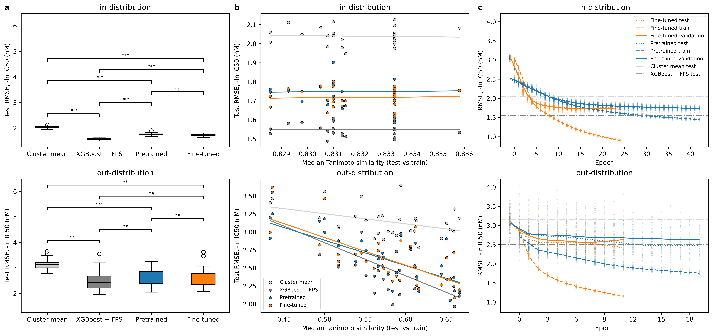

bertsheep
Part of my work at Accenture Labs, refactored with Claude Code. Source: github.com/bk1n/bertsheep.
Summary
Bidirectional encoder representations from transformers (BERT) for binding affinity (ba 🐑) prediction. Fine-tunes the pre-trained language model (ChemBERTa) on binding affinity of compounds to a single target and evaluates generalisation performance.
Results
Model performance

Pairwise Nadeau-Bengio corrected p-values, with Holm p-value adjustment, are shown above the boxplots. Out-of-distribution p-values are approximate.
The wide performance range out-of-distribution suggests that some clusters may be easier to predict than others; performance tracks across arms by seed (i.e. some seeds are easier to predict than others out-of-distribution).
Latent space with fine-tuning
- The embedding layer barely moves. In both distributions its layout is nearly the same at the pre-trained weights and at the last epoch. Fine-tuning changes the encoder layers, not the token embeddings.
- The last encoder layer reorganises around affinity. In-distribution, weak binders (dark) collect on one side of encoder layer 3 and potent ones (yellow/orange) on the other by the selected epoch. The same starts to happen out-of-distribution.
- In-distribution, test molecules move with their training neighbours. In the above figures, clusters are coloured if they are part of the test set. During in-distribution training, these clusters are associated with training compounds, so the test clusters are carried along into the affinity-sorted layout.
- Out-of-distribution, the training molecules rearrange while the held-out molecules stay close to where they started. During out-of-distribution training, the training molecules are still reorganised in the last layer to an affinity-sorted layout. In contrast, the test clusters remain relatively static, moving little and not following the training molecules. The model is not able to learn generalisable features that transfer to these clusters. This highlights the poor performance on out-of-distribution compounds and weak generalisation.
Data
Labels come from the BindingDB dump BindingDB_All_202609_tsv. Four targets are registered for training. They were chosen on the number of Butina clusters of 10 or more, not on raw ligand count, because an out-of-distribution split needs enough whole clusters to hold out. All results here are for wild-type EGFR.
| Target | Ligands | Butina clusters of 10+ | Example mutation |
|---|---|---|---|
| EGFR | 11,056 | 219 | L858R,T790M |
| JAK2 | 10,804 | 158 | |
| BRAF | 3,048 | 37 | V600E |
| LRRK2 | 1,458 | 28 | G2019S |
The target is wild-type human EGFR (UniProt EGFR_HUMAN, P00533). The dump is preprocessed as follows:
| Step | Rows left |
|---|---|
| Single-protein chains | 31,550 |
Numeric IC50 > 0 (drops blanks and censored values such as >10000) and SMILES under 128 characters | 23,262 |
| Wild type only | 16,789 |
| RDKit can parse the SMILES; not acyclic | 16,781 |
| Collapse repeated measurements of each canonical SMILES to the median IC50 | 11,056 |
Labels are IC50 in nM, transformed to −ln IC50, i.e. the natural log, not pIC50. All RMSEs in this report are in those units.
Methods
Models and baselines
| Arm | What it is |
|---|---|
| Training mean | Predicts the training-set mean for every molecule: the floor every model has to clear. |
| Cluster mean | Predicts the training mean of each molecule's Butina cluster: what knowing the series alone is worth. Out of distribution no test cluster is in training, so it falls back to the training mean and scores identically to it. |
| XGBoost + ECFP4 | XGBoost regressor on 1024-bit Morgan fingerprints (radius 2). Up to 5,000 trees, with early stopping after 50 rounds without improvement on validation. |
| Pre-trained | DeepChem/ChemBERTa-10M-MTR with its encoder frozen; only the regression head is trained. |
| Fine-tuned | The same model with the whole network trained (plain AdamW, no layerwise LR decay or layer reinitialisation). |
Both ChemBERTa arms use a single-output regression head, with its bias initialised to the training mean. They are trained on MSE with batch size 128 and a linear warmup-then-decay schedule stepped per batch, for at most 80 epochs. Early stopping has a patience of 5 epochs on validation loss, and the epoch with the best validation loss is the one selected.
Splits
Compounds are clustered with Butina clustering on ECFP4 Tanimoto distance (cutoff 0.5), a relatively stringent method. Only clusters of 10 or more molecules enter the splits, which leaves 8,802 molecules. Each seed draws a new 70 / 15 / 15 train / validation / test split and a new model initialisation.
- In distribution: splitting is stratified by cluster (
StratifiedKFold), so every cluster appears in train, validation and test. - Out of distribution: whole clusters are held out (
GroupShuffleSplit), so test molecules come from series never seen in training.
| Distribution | Train | Validation | Test |
|---|---|---|---|
| In | 5,868 | 1,467 | 1,467 |
| Out | 5,200–6,991 | 788–2,493 | 708–2,250 |
Tuning
Hyperparameters are optimised with Optuna's TPE sampler (10 random start-up trials) and a median pruner. The search uses 100 trials for XGBoost and 50 for each ChemBERTa arm. Because of the compute available, tuning runs on seed 0's split only, and every seed reuses the result.
| Arm | Distribution | Learning rate | Weight decay | Warmup ratio | Dropout |
|---|---|---|---|---|---|
| Pre-trained | search | 10⁻⁴–10⁻² (log) | 0–0.3 | 0–0.2 | 0.05–0.30 |
| Pre-trained | in | 7.6 × 10⁻³ | 0.018 | 0.042 | 0.097 |
| Pre-trained | out | 9.3 × 10⁻³ | 0.131 | 0.074 | 0.138 |
| Fine-tuned | search | 10⁻⁵–10⁻³ (log) | 0–0.3 | 0–0.2 | 0.05–0.30 |
| Fine-tuned | in | 3.9 × 10⁻⁴ | 0.202 | 0.113 | 0.057 |
| Fine-tuned | out | 5.1 × 10⁻⁴ | 0.217 | 0.028 | 0.067 |
| Distribution | Max depth | Learning rate | Subsample | Column sample | Min child weight | L2 (λ) |
|---|---|---|---|---|---|---|
| search | 3–10 | 0.01–0.3 (log) | 0.5–1.0 | 0.2–1.0 | 1–20 (log) | 10⁻³–10 (log) |
| in | 10 | 0.012 | 0.88 | 0.21 | 1.66 | 0.49 |
| out | 10 | 0.070 | 0.92 | 0.85 | 6.62 | 0.005 |
Statistics
Arms are compared pairwise on per-seed test RMSE using Nadeau and Bengio's (2003) corrected resampled paired t-test. Every arm sees the same split for a given seed, so pairing on seed removes how hard each split is.
The correction is needed because the seeds are resplits of one dataset, not independent datasets. Their training sets overlap, so the per-seed differences are positively correlated. The plain paired t-test's variance, σ²/J, would therefore overstate certainty. Nadeau–Bengio replaces it with (1/J + ntest/ntrain) σ² and compares against t with J − 1 degrees of freedom.
p-values are adjusted for multiple comparisons with Holm's method, separately within each distribution. Out of distribution, the test-set size varies by seed and the ratio is averaged over seeds, so those p-values are approximate.
Compute
All runs were trained locally on a single NVIDIA RTX 4060. bf16 autocast (forward pass only, with weights and optimiser state in fp32) gave roughly a 2× speed-up. A median run takes about 40 s in distribution and 15–20 s out of distribution for the ChemBERTa arms, and under 10 s for XGBoost.
Reproduce
Setup, the BindingDB download and the training commands are in the README. uv run bertsheep EGFR --train --results reruns the tuning, the 30-seed grid and the figures in this report.